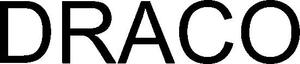

Trade Mark Journal No.2025/013 28 March 2025
WO0000001830766 (5,9,10,16,28,35,38,41,42,44)
Office of origin: Germany
Date of International Registration:14 August 2024
Date of designation in the UK:
14 August 2024

International priority date claimed: 19 February 2024
(Germany)
- Class 5
- Medical and veterinary preparations; bacteriological preparations for medical and veterinary use; bacterial preparations for medical and veterinary use; adhesive plasters; antiseptic cotton; aseptic cotton; bandages for dressings; preparations for the treatment of burns; wadding for medical purposes; lint for medical purposes; cotton for medical purposes; medical dressings; solvents for removing adhesive plasters; surgical dressings; gauze for dressings; absorbent cotton; first-aid boxes, filled; adhesive tapes for medical purposes; adhesive pads for medical purposes; eyepatches for medical purposes; stem cells for medical purposes; alginates for pharmaceutical purposes; urinary tract disinfectants; surgical glues; adhesive nipple patches for medical purposes; medical preparations; medical dressings and medical plasters; medical applicators, namely haemostatic pencils, headache relief sticks, caustic pencils, alcohol swabs for medical purposes, adhesive tapes for medical purposes; dressings, medical; wound dressings; plasters, materials for dressings; sanitary preparations and articles; disinfectants and antiseptics; antiseptic preparations for wound care; surgical bandages; elastic bandages [dressings].
- Class 9
- Downloadable and recorded content; recorded content; media content; instruction manuals in electronic format; downloadable educational course materials; software; training software; games software; downloadable interactive entertainment software for playing computer games.
- Class 10
- Clothing, headgear and footwear, braces and supports, for medical purposes; clothing especially for operating rooms; patient examination gowns; protective masks for medical purposes; compression garments; gloves for medical purposes; neural helmets for medical purposes; orthopaedic footwear; clothing, headgear, footwear specially for operating rooms; protective clothing for medical purposes; chemically activated cold gel packs for medical use; cold packs for medical purposes; cooling patches for medical purposes; cooling pads for first aid purposes; orthopedic articles, except orthoses; medical hosiery; therapeutic hosiery; pumps for medical purposes; medical and veterinary apparatus and instruments; thermo-electric compresses; bandages for orthopedic purposes.
- Class 16
- Printed matter; teaching materials [except apparatus]; printed teaching materials; books; colouring books.
- Class 28
- Toys, games, and playthings.
- Class 35
- Wholesale and retail services as well as online and catalogue mail order services in relation to pharmaceutical products, sanitary preparations, plasters and materials for dressings, cosmetics, chemists' articles as well as medical and orthopedic articles.
- Class 38
- Telecommunication services; communications by computer and providing access to the Internet; communications by computer and Internet access provider services; provision of access to content, websites and portals; providing online forums, chatrooms and notice boards for the transmission of messages between users in the in the field of wound treatment; providing user access to platforms on the Internet; telecommunication services provided via Internet platforms and portals; providing access to platforms on the Internet; providing access to e-commerce platforms on the Internet; providing access to platforms and portals on the Internet; telecommunication services provided via platforms and portals on the Internet and other media; providing access to databases; providing access to a video sharing portal; provision of electronic video links.
- Class 41
- Translation and interpretation; videotaping; education and instruction services; educational services provided by schools; education information; providing television programs, not downloadable, via video-on-demand services; providing films, not downloadable, via video-on-demand services; providing online videos, not downloadable; providing online music, not downloadable; providing user reviews for entertainment or cultural purposes; providing user rankings for entertainment or cultural purposes; vocational guidance [education or training advice]; coaching [training]; presenting museum exhibitions; practical training [demonstration]; electronic desktop publishing; multimedia library services; services for the acquisition of educational certificates, namely providing training and educational examination; vocational retraining; photographic reporting; academies [education]; teaching; correspondence courses; distance learning; educational research; photography; publication of texts, other than publicity texts; know-how transfer [training]; providing online electronic publications, not downloadable; online publication of electronic books and journals; arranging and conducting of in-person educational forums; arranging and conducting of conferences; arranging and conducting of congresses; arranging and conducting of symposiums; production of podcasts; arranging and conducting of seminars; arranging and conducting of workshops [training]; arranging and conducting of colloquiums; organization of exhibitions for cultural or educational purposes; organization of competitions [education or entertainment]; writing of texts; transfer of business knowledge and know-how [training]; publication of books; education, entertainment and sport services; organization and conducting of conferences; conducting of conventions; organization of seminars and conventions in the field of medicine; provision of training courses; education services relating to medicine; beauty arts instruction; publication of instructional literature; production of training videos; entertainment services; video game services; provision of non-downloadable games on the Internet.
- Class 42
- Scientific and technological services; medical and pharmacological research services; providing information about the results of clinical trials for pharmaceutical products; conducting clinical trials for pharmaceutical products; clinical research.
- Class 44
- Human healthcare services; medical care; health care consultancy services [medical]; consultancy and information services relating to pharmaceutical products; pharmacy advice; health assessment services; dietary and nutritional advice; regenerative medicine services; human tissue bank services; medical assistance; hospital services; health centre services; hospice services; medical clinic services; remote monitoring of medical data for medical diagnosis and treatment; health counselling; medical services; home-visit nursing care; medical nursing; medical analysis services for diagnostic and treatment purposes provided by medical laboratories; medical treatment using cultured cells; medical advice for persons with disabilities; medical screening; palliative care; plastic surgery; postnatal care services; medical equipment rental.
Dr. Ausbüttel & Co. Gesellschaft mit beschränkter Haftung
Representative: Schneiders & Behrendt PartmbB, Rechts- und Patentanwälte, Gerard-Mortier-Platz 6, 44793 Bochum, GERMANY